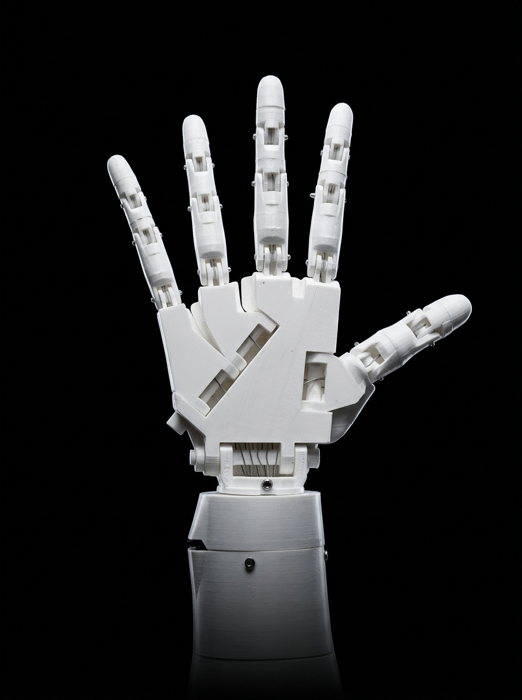

Tradução de Libras através de Robótica e Visão Computacional

Uma ponte entre tecnologia e acessibilidade. O LibraTronic traduz a Língua Brasileira de Sinais em tempo real através de inteligência artificial e aciona uma prótese robótica biomimética.
Arraste para orbitar em 360° e inspecione a mecânica articular da mão virtual.
Entrada & Datilologia Sincronizada
Sinais Compostos & Expressões em Libras
Clique em qualquer sinal para executá-lo simultaneamente no Simulador 3D e na mão física ESP32:
Ligue o ESP32 e clique em Conectar para parear via Web Bluetooth BLE.
Telemetria do Sistema & Pacotes BLE
Simulador Cinético 3D Sincronizado
3D + ESP32 AO VIVODigite ou clique no Teclado Datilógrafo para movimentar a mão 3D e o ESP32...
Arraste para orbitar · Scroll para zoom · Sincronizado em tempo real com os 6 servos
Análise biomecânica de ângulos articulares · Filtro cinemático anti-spam · Trajetórias de J e Z
Letra Detectada
VISÃO COMPUTACIONALAguardando câmera...
Palavra / Frase Formada
Sustente o sinal estático por ~0.85s para confirmar · Desenhe J (mindinho) ou Z (indicador) no ar